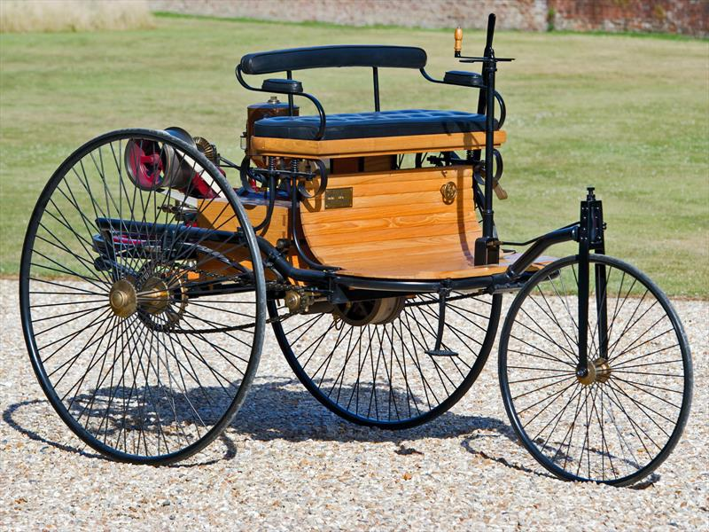
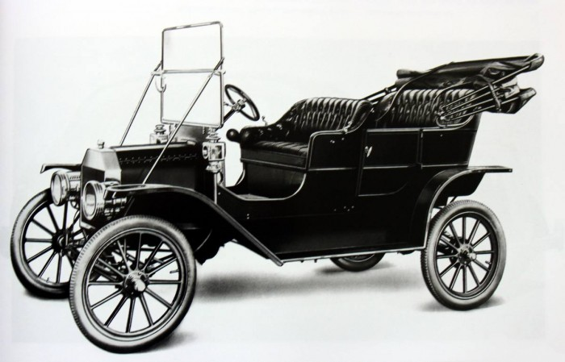
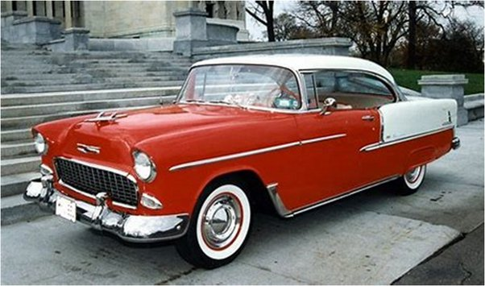

| Año | FOTO | DESCPRICION |
| siglo XVIII. |  | Los más significativos fueron impulsados por vapor del siglo XVIII. |
| 1815 | En 1815 Josef Bozek, construyó un auto con motor propulsado mediante aceite. | |
1924 |
 | Walter P. Chrysler saca al mercado un automóvil con su nombre que es el primero con nombre propio y que incluye frenos hidráulicos y motor de alta compresión. |
| 1988 |  | El modelo Chrysler New Yorker es el primer coche americano en implantar el Airbag como equipamiento estándar |